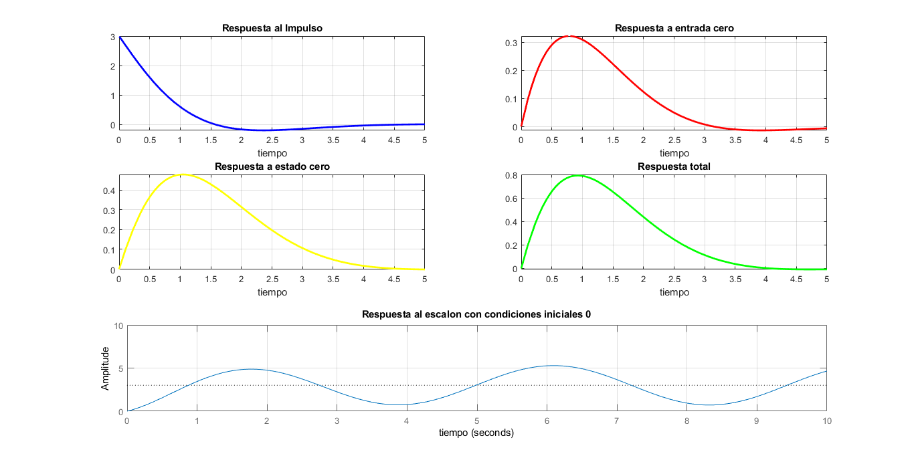

Práctica 6: Sistemas Diferenciales y en diferencias
Quijano Gutiérrez Luis Humberto Zárate Murillo Jose Antonio
Contents
Problema 1
function [Hs] = FdeTransferencia(a,b,ciy,cix,xi) close all tam=size(a); tami=size(b); syms Y(s) X(s) Yy Ys Xs H(s); syms edd edi edd=0; edi=0; for i=1:tam(2) edd=edd+a(i)*s^(i-1)*Y(s); for k=1:i-1 edd=edd-a(i)*(s^(i-1-k)*ciy(k)); end end for i=1:tami(2) edi=edi+b(i)*s^(i-1)*X(s); for k=1:i-1 edi=edi-b(i)*(s^(i-1-k)*cix(k)); end end edi=subs(edi,X(s), laplace(xi)); edd=collect(edd,Y(s)); edd=subs(edd,Y(s),Yy); eq1=edd==edi; edd=solve(eq1, Yy); Ys=partfrac(edd); Xs=laplace(xi); Hs=simplify(Ys/Xs); end
syms t;
FdeTransferencia([2 2 1],[2 1],[1 1],[0],exp(-t).*heaviside(t))
ans = (s^2 + 5*s + 5)/(s^2 + 2*s + 2)
Problema 2
function [ht] = RespImpulso(a,b,ciy,cix,xi) syms Hs; Hs=FdeTransferencia(a,b,ciy,cix,xi); ht= ilaplace(Hs); fplot(ht,[0, 5],'b','LineWidth',2) xlabel('tiempo') title('Respuesta al Impulso') end
syms t;
RespImpulso([2 2 1],[2 1],[1 1],[0],exp(-t).*heaviside(t))
ans = dirac(t) + 3*exp(-t)*cos(t)

Problema 3
function [ Respuesta_0 ] = R_entrada00(a,ciy) close all tam=size(a); syms y(t) Y(s) Yy; syms edd; edd=0; for i=1:tam(2) edd=edd+a(i)*s^(i-1)*Y(s); for k=1:i-1 edd=edd-a(i)*(s^(i-1-k)*ciy(k)); end end edd=collect(edd,Y(s)); edd=subs(edd,Y(s),Yy); eq1=edd==0; edd=solve(eq1, Yy); Respuesta_0=ilaplace(edd); fplot(Respuesta_0,[0, 5],'b','LineWidth',2) xlabel('tiempo') title('Respuesta a entrada cero') end
syms t;
R_entrada00([2 2 1],[0 1])
ans = exp(-t)*sin(t)

Problema 4
function [ Respuesta_Estado0 ] = R_estado00(a,b,xi) close all tam=size(a); tami=size(b); syms y(t) Y(s) X(s) Yy; syms edd edi edd=0; edi=0; for i=1:tam(2) edd=edd+a(i)*s^(i-1)*Y(s); end for i=1:tami(2) edi=edi+b(i)*s^(i-1)*X(s); end edi=subs(edi,X(s), laplace(xi)); edd=collect(edd,Y(s)); edd=subs(edd,Y(s),Yy); eq1=edd==edi; edd=solve(eq1, Yy); Respuesta_Estado0=ilaplace(edd); fplot(Respuesta_Estado0,[0, 5],'b','LineWidth',2) xlabel('tiempo') title('Respuesta a estado cero','FontWeight','bold','FontSize',16) end
syms t;
R_estado00([2 2 1],[2 1],exp(-t).*heaviside(t))
ans = exp(-t) - exp(-t)*(cos(t) - sin(t))
Problema 5
function [Respuesta_Total] = R_total(a,b,ciy,xi) Respuesta_Total=R_entrada00(a,ciy)+R_estado00(a,b,xi); fplot(Respuesta_Total,[0, 5],'b','LineWidth',2) xlabel('tiempo') title('Respuesta Total') end
syms t;
R_total([2 2 1],[2 1],[0 1],exp(-t).*heaviside(t))
ans = exp(-t) - exp(-t)*(cos(t) - sin(t)) + exp(-t)*sin(t)
Problema 6
clc clear all close all s=tf('s') g=(2*s^4+12*s^3+21*s^2+21*s+12)/(s^5+3*s^4+6*s^3+8*s^2+8*s+4) t=0:0.01:10; step(g,t) xlabel('tiempo') title('Respuesta al escalon')
s = s Continuous-time transfer function. g = 2 s^4 + 12 s^3 + 21 s^2 + 21 s + 12 ------------------------------------- s^5 + 3 s^4 + 6 s^3 + 8 s^2 + 8 s + 4 Continuous-time transfer function.
Problema 7
syms t; a=RespImpulso([2 2 1],[2 1],[1 1],[0],exp(-t).*heaviside(t)); b=R_entrada00([2 2 1],[0 1]); c=R_estado00([2 2 1],[2 1],exp(-t).*heaviside(t)); d=R_total([2 2 1],[2 1],[0 1],exp(-t).*heaviside(t)); s=tf('s'); g=(2*s^4+12*s^3+21*s^2+21*s+12)/(s^5+3*s^4+6*s^3+8*s^2+8*s+4); t=0:0.01:10; subplot(3,2,1) fplot(a,[0, 5],'b','LineWidth',2); grid on; xlabel('tiempo') title('Respuesta al Impulso') subplot(3,2,2) fplot(b,[0, 5],'r','LineWidth',2); grid on; xlabel('tiempo') title('Respuesta a entrada cero') subplot(3,2,3) fplot(c,[0, 5],'y','LineWidth',2); grid on; xlabel('tiempo') title('Respuesta a estado cero') subplot(3,2,4) fplot(d,[0, 5],'g','LineWidth',2); grid on; xlabel('tiempo') title('Respuesta total') subplot(3,2,[5 6]) step(g,t); grid on; xlabel('tiempo') title('Respuesta al escalon con condiciones iniciales 0')

Problema 8
function [Hz] = FdeTransferenciaDis(a,b,ciy,cix,xi) close all tam=size(a); tami=size(b); syms y(n) n z Y(z) x(n) X(z) Yy fp; syms edd edi edd=0; edi=0; for i=1:tam(2) yd(i)=y(n+tam(2)-i); edd=edd+ a(i)*ztrans(yd(i)); end for i=1:tami(2) xd(i)=x(n+tami(2)-i); edi=edi+ b(i)*ztrans(xd(i)); end edd=subs(edd,ztrans(y(n),n,z), Y(z)); edi=subs(edi,ztrans(x(n),n,z), X(z)); for j=1:tami(2)-1 edi=subs(edi,x(tami(2)-1-j),cix(j)); end for j=1:tam(2)-1 edd=subs(edd,y(tam(2)-1-j),ciy(j)); end edi=subs(edi,X(z), ztrans(xi)); edd=collect(edd,Y(z)); edd=subs(edd,Y(z),Yy); eq1=edd==edi; edd=solve(eq1, Yy); Yz=partfrac(edd); Xz=ztrans(xi); Hz=simplify(Yz/Xz); end
syms n;
FdeTransferenciaDis([6 5 1],[1 1],[2 1],[0.5],heaviside(n))
ans = (12*z^3 + 22*z^2 - 31*z + 1)/(6*z^3 + 11*z^2 + 6*z + 1)
Problema 9
function [hn] = RespImpulsoDis(a,b,ciy,cix,xi) syms Hz n; Hz=FdeTransferenciaDis(a,b,ciy,cix,xi); hn= iztrans(Hz); tiempo=0:1:10; stem(tiempo,subs(hn,n,tiempo),'b','LineWidth',2) title('Respuesta al Impulso ','FontWeight','bold','FontSize',16) grid on end
syms n;
RespImpulsoDis([6 5 1],[1 1],[2 1],[0.5],heaviside(n))
ans = 82*(-1/2)^n - 21*(-1)^n - 60*(-1/3)^n + kroneckerDelta(n, 0)
Problema 10
function [Respuesta_Entrada0] = R_entrada0Dis(a,ciy) close all tam=size(a); syms y(n) n Y(z) Yy; syms edd; edd=0; for i=1:tam(2) yd(i)=y(n+tam(2)-i); edd=edd+ a(i)*ztrans(yd(i)); end edd=subs(edd,ztrans(y(n),n,z), Y(z)); for j=1:tam(2)-1 edd=subs(edd,y(tam(2)-1-j),ciy(j)); end edd=collect(edd,Y(z)); edd=subs(edd,Y(z),Yy); eq1=edd==0; edd=solve(eq1, Yy); Respuesta_Entrada0=simplify(iztrans(edd)); % figure (1) % hFig = figure(1); % set(hFig, 'Position', [0 0 900 900]) % axes1 = axes('Parent',hFig,'FontWeight','bold','FontSize',16); tiempo=0:1:10; stem(tiempo,subs(Respuesta_Entrada0,n,tiempo),'b','LineWidth',2) xlabel('tiempo') title('Respuesta a entrada cero','FontWeight','bold','FontSize',16) end
syms n;
R_entrada0Dis([6 5 1],[2 0])
ans = 12*(-1/3)^n - 12*(-1/2)^n
Problema 11
function [Respuesta_Estado0] = R_estado0Dis(a,b,xi) close all tam=size(a); tami=size(b); syms y(n) n z Y(z) x(n) X(z) Yy fp; syms edd edi edd=0; edi=0; ciy=[0 0]; cix=[0]; for i=1:tam(2) yd(i)=y(n+tam(2)-i); edd=edd+ a(i)*ztrans(yd(i)); end for i=1:tami(2) xd(i)=x(n+tami(2)-i); edi=edi+ b(i)*ztrans(xd(i)); end edd=subs(edd,ztrans(y(n),n,z), Y(z)); edi=subs(edi,ztrans(x(n),n,z), X(z)); for j=1:tami(2)-1 edi=subs(edi,x(tami(2)-1-j),cix(j)); end for j=1:tam(2)-1 edd=subs(edd,y(tam(2)-1-j),ciy(j)); end edi=subs(edi,X(z), ztrans(xi)); edd=collect(edd,Y(z)); edd=subs(edd,Y(z),Yy); eq1=edd==edi; edd=solve(eq1, Yy); h=partfrac(edd); Respuesta_Estado0=iztrans(h); % figure (1) % hFig = figure(1); % set(hFig, 'Position', [0 0 900 900]) % axes1 = axes('Parent',hFig,'FontWeight','bold','FontSize',16); tiempo=0:1:10; stem(tiempo,subs(Respuesta_Estado0,n,tiempo),'b','LineWidth',2) xlabel('tiempo') title('Respuesta a estado cero') end
syms n;
R_estado0Dis([6 5 1],[1 1],heaviside(n))
ans = (-1/3)^n/2 - (-1/2)^n/6 - kroneckerDelta(n, 0)/2 + 1/6
Problema 12
%<include>R_totalDis.m</include> % syms n; R_totalDis([6 5 1],[1 1],[2 0],heaviside(n))
ans = (25*(-1/3)^n)/2 - (73*(-1/2)^n)/6 - kroneckerDelta(n, 0)/2 + 1/6
Problema 13
clc clear all close all N=[12 22 -31 1]; D=[-12 2 8 2]; [Nz,Dz]=c2dm(N,D,1,'zoh'); y=dstep(Nz,Dz); plot(y,'.') grid on;
Problema 14
syms n; tiempo=0:1:10; a=RespImpulsoDis([6 5 1],[1 1],[2 1],[0.5],heaviside(n)); b=R_entrada0Dis([6 5 1],[2 0]); c=R_estado0Dis([6 5 1],[1 1],heaviside(n)); d=R_totalDis([6 5 1],[1 1],[2 0],heaviside(n)); N=[12 22 -31 1]; D=[-12 2 8 2]; [Nz,Dz]=c2dm(N,D,1,'zoh'); y=dstep(Nz,Dz); subplot(3,2,1) stem(tiempo,subs(a,n,tiempo),'b','LineWidth',2); grid on; xlabel('tiempo') title('Respuesta al Impulso') subplot(3,2,2) stem(tiempo,subs(b,n,tiempo),'r','LineWidth',2); grid on; xlabel('tiempo') title('Respuesta a entrada cero') subplot(3,2,3) stem(tiempo,subs(c,n,tiempo),'y','LineWidth',2); grid on; xlabel('tiempo') title('Respuesta a estado cero') subplot(3,2,4) stem(tiempo,subs(d,n,tiempo),'g','LineWidth',2); grid on; xlabel('tiempo') title('Respuesta total') subplot(3,2,[5 6]) plot(y,'.'); grid on; xlabel('tiempo') title('Respuesta al escalon con condiciones iniciales 0')